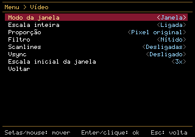
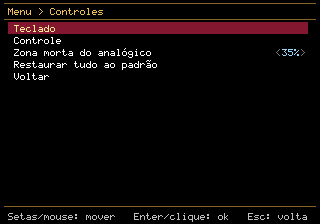
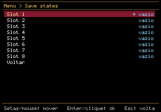
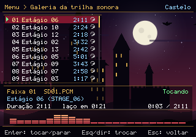
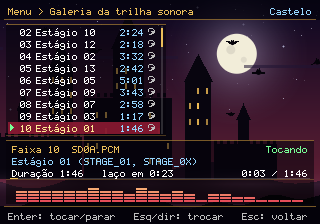
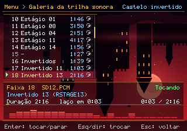

Visão geral
O projeto executa o código original do jogo num núcleo escrito do zero em C++20 (dois SH-2, SCU com DSP, SMPC, bloco de CD, VDP1, VDP2, 68000 e SCSP) e o envolve num executável moderno: janela com SDL3, som, teclado e controles, menu próprio, save states e uma galeria da trilha sonora. Não é um emulador genérico de Saturn: ele só precisa fazer este jogo funcionar, e por isso dispensa a BIOS do console.
Nada do jogo no repositório
O código e as ferramentas são originais. O jogo vem do seu disco, convertido localmente num pacote (dracula-x.pak) que nunca sai da sua máquina.
Sem BIOS
Uma BIOS por software, escrita para o projeto, substitui a do console. Só é preciso a imagem do disco, e apenas uma vez.
Extras do port
Menu dentro do jogo, 8 slots de save state, remapeamento de teclado e controle, escala inteira, filtros e a galeria da trilha sonora com 49 faixas.
Fluxo
Downloads
| Sistema | Arquivo | Observação |
|---|---|---|
| Linux x86_64 | Dracula-X-PC-x86_64.AppImage | Arquivo único: chmod +x e execute. Precisa de glibc 2.38 ou mais nova. |
| Linux x86_64 | dracula-x-linux-x86_64.tar.gz | Pasta com a libSDL3 embutida. |
| Windows 64 bits | Dracula-X-PC-Setup-x64.exe | Instalador com atalhos e desinstalador. Sem assinatura digital: o SmartScreen pode avisar. |
| Windows 64 bits | dracula-x-windows-x64.zip | Versão portátil. |
| macOS (Intel e Apple Silicon) | ainda não | Os scripts existem, mas nunca rodaram num Mac. Veja Compilar. |
Conferir a integridade: SHA256SUMS.txt · Todas as versões: página de releases.
Primeiros passos
O que você precisa
- O seu próprio disco de Akumajou Dracula X – Gekka no Yasoukyoku (Japão, T-9527G, versão 1.400), como imagem
.cue+.bin. - Cerca de 400 MB livres para o pacote local.
- Não precisa de BIOS do Saturn.
Primeira execução
- Abra o
dracula-x(no Windows,dracula-x.exe). - Uma janela do sistema pede o arquivo
.cuedo disco. O port confere a versão pelo SHA-256 dos setores; qualquer imagem de outra versão ou incompleta é recusada, sem gerar nada. - Ele cria o
dracula-x.pakem poucos segundos. A partir daí o disco não é mais necessário, e mover ou apagar a imagem não afeta nada.
Pela linha de comando:
dracula-x --install "caminho/do/disco.cue" # só gera o pacote local
dracula-x "caminho/do/disco.cue" # roda direto do disco, sem instalar
dracula-x --data-dir uma/pasta # escolhe onde ficam pacote, saves e opções
dracula-x --helpOnde ficam os arquivos
| Sistema | Pasta de dados |
|---|---|
| Linux | ~/.local/share/dracula-x-pc/dracula-x/ |
| Windows | %APPDATA%\dracula-x-pc\dracula-x\ |
| macOS | ~/Library/Application Support/dracula-x-pc/dracula-x/ |
Ali ficam o dracula-x.pak, os saves do jogo (dracula-x.bup), os save states, as capturas e as opções (dracula-x.ini). Modo portátil: se houver um dracula-x.pak ao lado do executável, ele é usado e os saves ficam ali.
Controles, menu e galeria
Teclado padrão
| Saturn | Tecla |
|---|---|
| Direcional | Setas |
| Start | Enter |
| A / B / C | Z / X / C |
| X / Y / Z | A / S / D |
| L / R | Q / W |
Controles de videogame (Xbox, PlayStation e similares) são reconhecidos ao conectar. Tudo pode ser remapeado no menu.
Atalhos
| Esc (ou Back/Guide no controle) | abre o menu do port, que pausa o jogo |
| F5 / F7 | salva / carrega o save state do slot atual |
| F6 / F8 | slot anterior / próximo (são 8) |
| F11 | tela cheia |
| F12 | captura de tela (na pasta de dados) |
O menu do port
Save states, vídeo (janela ou tela cheia, escala inteira, proporção original ou 4:3, filtro nítido ou suave, scanlines, vsync), áudio (volume, mudo, latência), remapeamento de teclado e controle, zona morta do analógico e a galeria da trilha sonora.



Galeria da trilha sonora
Toca as 49 faixas de música do jogo, lidas do seu pacote local (formato DVI/IMA ADPCM, com o laço original), com um cenário animado e um espectro. Para as faixas que o jogo usa em estágios, mostra o arquivo de fase de origem. Os cenários são arte original do projeto, e não imagens do jogo.



Estado do projeto
| Componente | Situação |
|---|---|
| SH-2 (mestre e escravo) | completo interpretador, DMAC, FRT, divisão, cache, interrupções |
| SCU | completo DMA direto e indireto, interrupções, DSP (VLIW de 48 bits) |
| SMPC | completo comandos usados pelo jogo e pelo BIOS, INTBACK, troca de relógio |
| Bloco de CD | completo comandos, filtros e partições, ISO 9660 com extensão XA, autenticação |
| VDP1 | completo sprites, polígonos, linhas, Gouraud, malha, meia-transparência, clipping |
| VDP2 | quase NBG0–3, rolagem por linha, zoom, bitmap, prioridades, cálculo de cor, janelas; RBG0/RBG1 e janelas de linha e de sprite só com testes sintéticos (o jogo não os usa); falta mosaico e janela de cálculo de cor |
| 68000 + SCSP | quase 68000 completo, síntese dos 32 slots, envelope, pan e DSP; efeitos de FM e LFO não são usados pelo jogo |
| BIOS | por software o BIOS real só é usado em validação local, nunca distribuído |
| Frontend | completo menu, save states, remapeamento, galeria, pacote local |
| Recompilação estática (AOT) | não feita evolução futura: hoje o código é interpretado |
| macOS | não testado scripts prontos, sem Mac para validar |
Limitações conhecidas
- Desempenho no limite. No gameplay, o núcleo gasta cerca de 15,7 ms por quadro contra os 16,7 ms do 60 Hz, e alguns quadros chegam a 30 ms. Podem ocorrer quedas de quadro e estalos no som quando o quadro atrasa. Este é o foco do trabalho atual.
- Só foram verificadas por inteiro as primeiras fases; o resto não foi jogado.
- O instalador do Windows foi testado no Wine, mas não numa máquina Windows de verdade, e não é assinado digitalmente.
- No boot pelo BIOS real (usado só para validar o núcleo), o jogo começa cerca de 3 s antes do que num emulador de referência; a causa não foi investigada e não afeta o port, que usa a BIOS por software.
Como funciona
O código está organizado em módulos pequenos, cada um com testes:
| Pasta | Conteúdo |
|---|---|
src/saturnfs | leitor de imagem de disco (.cue/.bin), ISO 9660, SHA-256, pacote local DXPCPAK1 |
src/sh2 | CPU SH-2: instruções, cache, controlador de interrupções, DMAC, FRT, divisor |
src/saturn | máquina: barramento, SCU e DSP, SMPC, bloco de CD, BIOS por software, temporização NTSC, save states |
src/video | renderizador em software do VDP1 e do VDP2, escrita de PNG |
src/audio | 68000, SCSP (síntese e DSP), decodificador DVI/IMA ADPCM, WAV |
src/frontend | executável SDL3, menu, entrada, configuração, galeria e cenários |
src/tools | ferramentas de linha de comando: extração, catálogo, exportação da música, dxpc-run (execução sem janela para testes e diagnóstico) |
Decisões de projeto
- Determinismo. Relógio de tempo real fixo e temporização por ciclos: o mesmo roteiro de entrada produz sempre a mesma imagem e o mesmo áudio, bit a bit. Isso permite testes por hash.
- Pacote local. O disco é lido uma vez e gravado num formato próprio com cabeçalho e SHA-256, em escrita atômica.
- Save states versionados. Estados de versões antigas são recusados com mensagem, e os índices lidos do arquivo (conexões do bloco de CD, registradores do DSP) são validados na carga.
- Temporização NTSC. Linhas, VBlank e HBlank seguem o modo de vídeo ativo (TVMD), que também ajusta o relógio das amostras do SCSP.
Documentação técnica detalhada, com o que foi observado e o que foi inferido: boot e memória · overlays · música DVI · tabela de músicas · gráficos · som e mídia · mapa do jogo · boot e BIOS real · executável, áudio e distribuição.
Fidelidade e testes
- 380 casos de teste automatizados (Catch2), cobrindo CPU, barramento, SCU e DSP, SMPC, bloco de CD, vídeo, áudio, save states e o frontend. A suíte passa também compilando com o
clang. - Áudio do filme de abertura da Konami: correlação de 0,999998 com a gravação de um emulador de referência, rodando o BIOS real.
- Música do estágio 1: correlação de 0,95 a 0,99 com a faixa original decodificada do disco; o resíduo é compatível com os efeitos sonoros mixados por cima.
- Boot pelo BIOS real (validação local, nunca distribuído): sequência completa do BIOS até a tela de título, que valida o núcleo contra o hardware documentado.
- Censo de 56 fases: registro de todos os recursos de vídeo que o jogo liga em cada uma, para saber o que ainda falta de fato.
Compilar do código-fonte
Precisa de um compilador C++20 (GCC, Clang ou MSVC/MinGW), CMake 3.24+ e Ninja. O SDL3 só é necessário para o executável com janela; as ferramentas e os testes compilam sem ele.
Linux
git clone https://github.com/junior9283/dracula-x-pc && cd dracula-x-pc
cmake -S . -B build-release -G Ninja -DCMAKE_BUILD_TYPE=Release
cmake --build build-release
build-release/tests/tests # suíte de testes
build-release/dracula-x # o jogo (precisa do SDL3)
tools/package/build-linux.sh # tar.gz com a libSDL3 embutida
tools/package/build-appimage.sh # AppImageWindows (cross-compilação a partir do Linux, com mingw-w64)
tools/package/build-windows.sh # zip portátil
tools/package/build-windows-installer.sh # instalador (precisa do makensis)macOS (Intel e Apple Silicon)
brew install cmake ninja
tools/package/build-macos.sh # gera dist/Dracula-X-PC-macOS-{universal,x86_64,arm64}.dmgOu, sem ter um Mac, use o fluxo .github/workflows/macos.yml no GitHub Actions. Esses scripts nunca foram executados num Mac; relatos de problemas são bem-vindos.
Ferramentas de linha de comando
dxpc-extract <cue> <pasta> | extrai os arquivos do disco e gera um manifesto |
dxpc-catalog <cue> | lista e classifica os arquivos por tipo |
dxpc-overlays <cue> | endereço de carga dos overlays |
dxpc-music-export <cue> <pasta> | decodifica as 49 faixas de música para .wav |
dxpc-run <cue> … | executa o jogo sem janela, com capturas, gravação do áudio, roteiro de entrada, perfis de tempo e diagnósticos |
Perguntas frequentes
Preciso da ISO e da BIOS?
Da ISO (o seu disco), sim, mas uma única vez, para gerar o pacote local. Da BIOS, não: o port usa uma BIOS por software.
Se eu mudar a ISO de lugar, ele pede de novo?
Não. Depois da primeira vez ele usa só o dracula-x.pak. Só pede o disco de novo se o pacote for apagado, estiver corrompido, for de outra versão do formato, ou se você trocar a pasta de dados.
Posso levar o jogo para outro PC?
Instale o port no outro PC e aponte o seu disco na primeira execução. Também dá para copiar o dracula-x.pak para a pasta de dados da outra máquina, mas ele contém o jogo e serve só para uso seu.
Qual versão do disco funciona?
Somente a japonesa T-9527G v1.400, confirmada pelo SHA-256 dos setores. Outras versões ou regiões são recusadas.
Por que o som estala às vezes?
Hoje o núcleo tem pouca folga em relação aos 16,7 ms por quadro. Quando um quadro atrasa, a fila de áudio esvazia. Estamos otimizando o interpretador e deixando o áudio mais tolerante a atrasos.
Posso usar um save de Saturn de outro emulador?
Os saves do jogo ficam no dracula-x.bup, no formato da memória interna do Saturn. A importação de saves de outros emuladores não foi testada.
Como relato um problema?
Abra uma issue informando o sistema, a fase e o momento do problema. Não anexe o disco, o pacote local nem BIOS.
Legal e licença
Projeto independente e sem fins comerciais, não afiliado nem endossado pela Konami nem pela Sega. Castlevania, Akumajou Dracula X, Sega Saturn e demais nomes são marcas de seus donos.
O repositório e os pacotes não incluem o jogo, a imagem do disco, o pacote gerado a partir dele nem nenhuma BIOS. É preciso ter o seu próprio disco e usá-lo conforme a lei do seu país. O código foi escrito a partir de documentação pública e da observação do comportamento do jogo, sem copiar código de outros emuladores. Os cenários e o ícone da galeria são arte original.
O código é distribuído sob a licença MIT. O executável usa a biblioteca SDL3 (licença zlib).